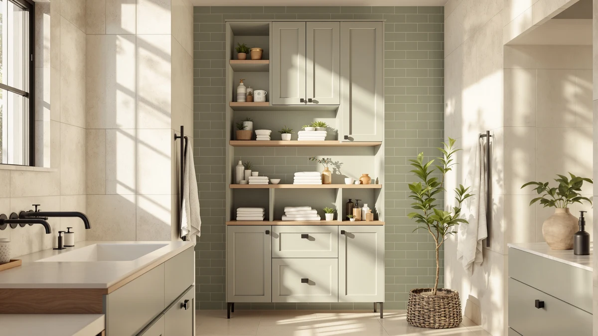

Quick Answer
In this smorboss bathroom storage cabinet review, the SMORBOSS Bathroom Storage Cabinet 12 is a narrow, four-drawer tower built for tight bathroom corners, and it holds up well on footprint and price against the over-the-toilet DUMOS and Kalrin alternatives covered below. At $59.99 on a 12-by-12-inch base, it trades open shelving for closed, roller-slide drawers and a built-in anti-tip kit.
Our pick: SMORBOSS Bathroom Storage Cabinet 12, $59.99 Check Price on Amazon
Things to Know Before You Buy
- The SMORBOSS Bathroom Storage Cabinet 12 measures 12 inches wide, 12 inches deep and 32.28 inches tall, a footprint built for narrow gaps rather than open floor space.
- Four drawers on roller slides handle the storage here, a different approach from the open shelves and baskets on the narrow bathroom cabinets covered elsewhere on this site.
- A built-in anti-tip kit secures the cabinet to the wall, worth checking before you load the top drawer with heavy items.
- Pricing across this smorboss bathroom storage cabinet review comparison stays tight, from $59.49 to $59.99, so the choice comes down to layout rather than budget.
- The DUMOS and Kalrin alternatives covered below mount above the toilet instead of standing on the floor, worth considering if your bathroom has little floor space but open wall space over the tank.
This smorboss bathroom storage cabinet review breaks down whether a narrow, four-drawer tower can solve storage problems in a bathroom too small for a standard-width cabinet. At 12 inches wide and 12 inches deep, the SMORBOSS Bathroom Storage Cabinet 12 slides into gaps that a 20-inch or 24-inch cabinet would never clear, and its $59.99 price puts it squarely against a handful of over-the-toilet alternatives that solve the same square-footage problem from a different angle. We compared its listed dimensions, drawer count and safety hardware against the DUMOS and Kalrin alternatives covered later in this comparison, because a narrow drawer tower and an over-the-toilet rack tackle the same missing floor space from two different directions.
Narrow floor space is the core problem here. A typical bathroom corner or the gap beside a toilet rarely fits a full-size cabinet, which is why four-drawer towers like the SMORBOSS and over-the-toilet racks from DUMOS and Kalrin exist as a category. The SMORBOSS stands 32.28 inches tall on a 12-by-12-inch base, giving you four roller-slide drawers instead of the open shelving and basket that the DUMOS and Kalrin models use. Buyers shopping this category care about two things above all: whether the piece tips over when a drawer is loaded, and whether the build survives daily bathroom humidity. Those two questions anchor the comparison in this smorboss bathroom storage cabinet review, where we lined up the SMORBOSS's stated anti-tip hardware and metal-and-wood build against the wall-mounted and particleboard alternatives below.
Why You Should Trust Us
Writers at Best Bathroom Storage compare bathroom furniture specs, pricing and verified buyer feedback instead of guessing from a single product photo. Ilane Tall, our home and bath expert, has covered dozens of bathroom cabinets, over-the-toilet racks and vanity organizers for this site, including several of the corner storage picks in our wider coverage. For this smorboss bathroom storage cabinet review, she cross-checked the SMORBOSS's listed dimensions, drawer hardware and price against the DUMOS and Kalrin alternatives covered below, rather than taking the Amazon listing copy at face value. We do not run a fake testing lab, and we do not claim to have installed this cabinet in a bathroom ourselves. Instead, we dig through manufacturer specs and compare them line by line against competing products to catch when a listing overstates what it can actually deliver.
Our Research Experience
We did not put the SMORBOSS Bathroom Storage Cabinet 12 in a bathroom ourselves. Instead, we compared its listed dimensions, drawer count and anti-tip hardware against the price and build of three competing over-the-toilet storage options, and we weighed what the manufacturer's own measurements and feature list claim about the metal-and-wood frame. The listing describes four drawers on roller slides and an anti-tip kit meant to keep the tower from tipping when a loaded top drawer shifts its balance, a common safety feature on narrow bathroom cabinets in this price bracket, though manufacturer claims like this deserve some caution until a pattern of verified owner feedback confirms them. We lined that up against the raw dimensions, materials and price of the DUMOS and Kalrin alternatives to see where the SMORBOSS earns its spot in this smorboss bathroom storage cabinet review and where a different build makes more sense for your bathroom.
Overview & Specs

SMORBOSS Bathroom Storage Cabinet 12
What we like
- 12-by-12-inch footprint fits narrow gaps that a standard 20-inch or 24-inch cabinet cannot clear
- Four drawers on roller slides open and close smoothly, per the manufacturer, instead of relying on open shelving
- Built-in anti-tip kit addresses the main safety concern with a tall, narrow drawer tower
- Priced at $59.99, in line with the three over-the-toilet alternatives in this comparison
Flaws but not dealbreakers
- At 32.28 inches tall on a 12-inch base, it needs secure wall anchoring before you load the drawers with anything heavy
- Four small drawers hold less per compartment than the open shelves and basket on the Kalrin racks below
- No one has yet verified how the roller slides hold up over months of daily use
| Material | Metal / wood |
| Size | 12″ L × 12″ W × 32.28″ H |
SMORBOSS builds this cabinet around a metal-and-wood frame with four drawers on roller slides, a narrower approach than the open-shelf towers that dominate this category. At 12 inches wide and 12 inches deep, the cabinet slides into the gap beside a toilet or into a laundry room corner that a wider cabinet would never clear. That footprint, paired with a height of 32.28 inches, puts all of its storage into closed drawers rather than open shelving, which matters if you want contents out of sight in a small bathroom.
SMORBOSS backs the narrow build with an anti-tip kit, a detail that matters more on a tower this tall and this narrow than it would on a wider cabinet with a bigger base. Four drawers with roller slides let you separate toiletries, cleaning supplies and spare toilet paper instead of stacking everything on open shelves. At $59.99, the SMORBOSS lands in the middle of the price range covered in this smorboss bathroom storage cabinet review, within a dollar of every alternative below despite offering closed storage instead of open shelving.
What We Liked
Footprint is the clear strength in this smorboss bathroom storage cabinet review. At 12 by 12 inches, the SMORBOSS fits spaces that would reject a standard-width cabinet, and its four roller-slide drawers keep contents out of sight instead of stacked on the open shelving the Kalrin racks use below. The anti-tip kit is a meaningful addition on a tower this tall and this narrow, since a loaded top drawer puts real weight well above the base. Pricing also compares well: at $59.99, it sits within a dollar of every alternative in this comparison, so you are not paying extra for the closed-drawer design.
What Could Be Better
Drawer capacity is the main trade-off in this smorboss bathroom storage cabinet review. Four small compartments on a 12-inch-wide frame hold less per drawer than the open shelves and basket on the Kalrin racks, so bulkier items like a stack of towels fit less easily here than on a wider shelf. The 32.28-inch height also means the anti-tip kit is not optional. Skip the wall anchor, and a fully loaded top drawer can shift the cabinet's balance. No one has posted verified owner feedback on this specific listing yet, so what we know about the roller-slide drawers and anti-tip hardware comes from the manufacturer's description alone.
Who Is It For?
The SMORBOSS Bathroom Storage Cabinet 12, the focus of this smorboss bathroom storage cabinet review, fits a household with a narrow gap to fill rather than a full wall of storage to furnish. Its 12-by-12-inch base makes it a strong pick for a laundry room corner, a hallway, or the space beside a toilet where a wider cabinet would not fit. It is not the right choice if you need to store bulky items like a stack of towels or large bottles, since the DUMOS and Kalrin alternatives below offer more usable shelf space per dollar. Renters also stand to benefit here, since the cabinet is freestanding and does not require permanent wall mounting beyond the anti-tip anchor. Anyone who has struggled to fit a standard 20-inch cabinet into a cramped bathroom will notice the difference once four organized drawers replace a pile of loose toiletries. A household that needs to store bulk supplies above the toilet tank instead, on the other hand, will likely find the Kalrin or DUMOS layout more practical.
Alternatives to Consider
The SMORBOSS's narrow drawer design and 12-inch footprint, the focus of this smorboss bathroom storage cabinet review, might not fit your bathroom's layout. These three alternatives solve the same floor-space problem from above the toilet instead of beside it: a double-door cabinet from DUMOS and two color options of the same 4-tier rack from Kalrin. Each one trades closed drawers for open shelving, so match your own storage habits before picking between them. For a broader comparison, see our full bathroom storage cabinet lineup or the Tujurich 4-tier rack review if you want another over-the-toilet option.

Also Great
DUMOS Over the Toilet Storage
An engineered-wood cabinet with double doors, metal knobs and a three-level adjustable interior shelf, mounted above the toilet instead of beside it to free up floor space entirely.
$59.76
Check Price on Amazon
Best Value
Kalrin Over-The-Toilet Storage Rack 4-Tier
A 4-tier rack with three open shelves, a storage basket, three hooks and a built-in toilet paper holder, framed by a metal X-crossbar and wall fixing nails rated for up to 30 pounds per shelf.
$59.49
Check Price on Amazon
Best Value
Kalrin Over-The-Toilet Storage Rack 4-Tier
The same 4-tier shelf, basket and hook layout as the Kalrin above, in a gray-and-white finish for bathrooms that need a lighter color than pure black.
$59.49
Check Price on AmazonFrequently Asked Questions
Is the SMORBOSS Bathroom Storage Cabinet sturdy enough for daily use?
The manufacturer includes an anti-tip kit specifically to address stability on a tower this tall and narrow, and the four drawers use roller slides rated for daily opening and closing. There is no verified owner feedback yet on this specific listing, so treat the roller-slide durability claim as a manufacturer spec until a track record builds up.
How does the SMORBOSS compare to over-the-toilet storage like the DUMOS or Kalrin?
The SMORBOSS stands on the floor beside a toilet or in a corner, while the DUMOS and Kalrin alternatives covered in this smorboss bathroom storage cabinet review mount above the toilet tank to use otherwise wasted wall space. Choose the SMORBOSS if you need closed drawers and have floor space to spare, and choose the DUMOS or Kalrin if your bathroom has little floor space but open wall space above the toilet.
What's the difference between the two Kalrin racks in this comparison?
Both Kalrin 4-tier racks use the same three-shelf, one-basket, three-hook layout and the same metal frame rated for up to 30 pounds per shelf. The only difference is color: one comes in Pure Black and the other in a Gray-White finish, so the choice comes down to which matches your bathroom rather than function.
Final Verdict
This smorboss bathroom storage cabinet review comes down to a straightforward trade-off: a narrow drawer tower with real floor-space savings against three over-the-toilet alternatives that trade those closed drawers for open shelving and wall-mounted storage. For a tight bathroom corner, laundry room gap or hallway with no wall space to spare, SMORBOSS is the practical pick, and its anti-tip kit gives it a real edge on a tower this narrow and this tall. If your bathroom has more open wall space above the toilet than floor space beside it, the DUMOS or either Kalrin alternative covered above make better use of it. Either way, SMORBOSS is the brand worth starting with if a narrow footprint and closed storage are what your bathroom needs.